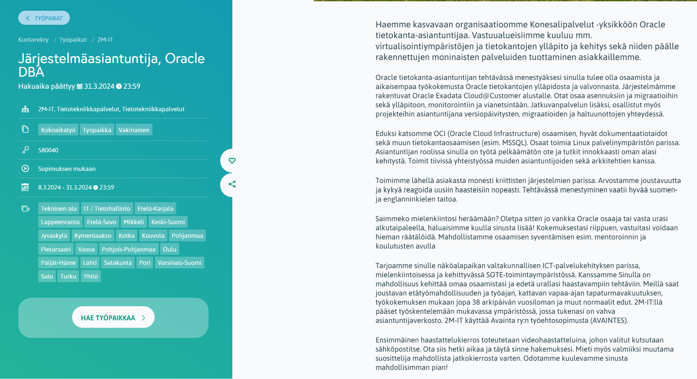
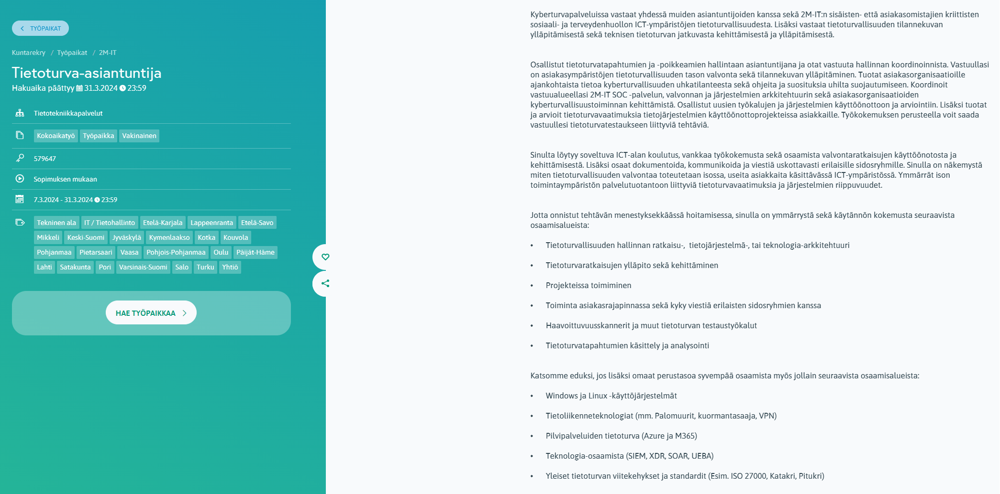

Linux on laajalti käytössä, ja monet meistä käyttävät sitä tietämättään erilaisissa käyttöjärjestelmissä, kuten älypuhelimissa, joissa on Android-käyttöliittymä – Androidilla onkin peräti 71,9 % osuus älypuhelinmarkkinoiden käyttöliittymistä. Lisäksi peräti 96,4 % palvelinsovelluksista toimii Linux-pohjaisella järjestelmällä. (Tecmint 2024.)
Tämä tekee Linux-osaamisesta arvokkaan taidon myös nykyisillä työmarkkinoilla, ja sitä tarvitaan monissa erilaisissa tehtävissä. Linux-osaamista tarvitaan esimerkiksi pilvipalveluissa, datatieteessä, DevOps-tehtävissä, tietoturvan parissa sekä ohjelmiston kehityksessä. Vuonna 2021 Linux-osaaminen rankattiin toiseksi kysytyimmäksi taidoksi IT-alan työpaikoissa, vain pilvipalveluiden jäädessä edelle. (Tecmint 2024.) Tietoturvaan liittyvän osaamisen kysyntä on merkittävää ja kasvussa. Monet ammattilaiset kokevat, että lisäkoulutus tietoturvaan liittyen olisi erittäin hyödyllistä ja että tarve varmistaa teknologiaratkaisujen todellinen turvallisuus on entistä tärkeämpää (Linux Foundation 2022).
Linux-osaamisen kysyntä pysyy erittäin korkeana ja jatkaa kasvuaan, koska Linuxin tarve laitteissa ja teknologioissa lisääntyy jatkuvasti. Linux Foundationin vuonna 2022 julkaiseman raportin mukaan monet työnantajat kohtaavat vaikeuksia löytää avoimen lähdekoodin osaajia, eikä tilanne näytä helpottuvan. Raportin mukaan lähes puolet työnantajista suunnitteli lisäävänsä avoimen lähdekoodin osaajien palkkaamista. Pilvipalveluiden kasvava tarve korostaa avoimen lähdekoodin osaamisen merkitystä, ja koska Linux on keskeinen pilvipalveluiden alustalla, Linux-osaamisen kysyntä on erityisen suuri. (Linux Foundation 2022.)
Linux-kursseilla ja sertifikaateilla on näin ollen merkittävä rooli työmarkkinoilla. Ne mahdollistavat työnhakijalle oman osaamisen vahvistamisen ja tarjoavat konkreettisen tavan osoittaa kykynsä potentiaalisille työnantajille (Tecmint 2024).
Linux-osaajille avautuu monipuolisia työmahdollisuuksia, erityisesti julkisen sektorin työpaikoilla. Esimerkiksi kuntarekryn-sivustoilta löytyi viisi työpaikkailmoitusta, joissa korostettiin Linux-osaamista. Näistä ilmoituksista kaksi oli 2M-IT Oy:n tarjoamia työpaikkoja. 2M-IT Oy on yritys, joka tarjoaa sosiaali- ja terveydenhuollon ICT-palveluja sairaanhoitopiireille ja kunnille, ja se on perustettu vuonna 2001.
Ensimmäisessä ilmoituksessa 2M-IT Oy etsi Oracle DBA -järjestelmäasiantuntijaa. Tehtäviin kuuluivat virtualisointiympäristön ja tietokantojen ylläpito sekä kehitys, monipuolisten palveluiden tarjoaminen ja osallistuminen Oracle-pilvipalveluihin. Hakijalta odotettiin osaamista erityisesti Oracle-pilvipalveluista, muista tietokannoista, dokumentointitaitoja ja kykyä toimia Linuxin palvelinympäristössä.
Toisessa ilmoituksessa 2M-IT Oy etsi tietoturva-asiantuntijaa, jonka vastuulla olisi tietoturvapalveluiden ylläpito ja sosiaali- ja terveydenhuollon ICT-ympäristön turvallisuudesta vastaaminen. Tehtäviin kuului myös tietoturvallisuuden tilannekuvan ylläpitäminen ja teknisen tietoturvan jatkuva kehittäminen. Hakijalta vaadittiin laaja-alaista tietoturvaosaamista ja etuna oli kokemus Windows- ja Linux-käyttöjärjestelmistä, tietoliikenneteknologioista sekä pilvipalveluista.

Duunitori ja Linux-osaaminen
Duunitorin tarjonnasta löytyy monipuolisesti Linux-osaamista vaativia työpaikkoja. Valitsin duunitorin tarjonnasta kaksi työpaikkaa sattumanvaraisesti. Molempien työpaikkojen kuvaukset tuovat esille tarpeen monipuoliselle Linux-osaamiselle, ja hakijoilta odotetaan kykyä toimia erilaisissa ympäristöissä ja vastuuta palvelin- ja pilvipalveluiden toteutuksista ja ylläpidosta.
Otaverkon IT-asiantuntijan tehtävät kattavat laajan skaalan ylläpito- ja kehitystehtäviä, keskittyen erityisesti palvelin- ja pilvipalveluihin. Tehtävään kaivataan myös kokonaisvaltaista osaamista IT-infran kokonaisarkkitehtuurista, palomuureista ja tietoliikenneyhteyksistä. Hakijalta odotetaan taitoa suunnitella, toteuttaa ja ylläpitää palvelin- ja pilvipalveluita eri ympäristöissä, kuten Windows, Linux, Azure ja varmistuspalvelut.
Patrian IT-spesialistin rooli pitää sisällään monipuolisia suunnittelu-, kehitys- ja ylläpitotehtäviä, erityisesti korkean turvatason tietojärjestelmien kehittämisessä ja ylläpidossa Linux-ympäristöissä. Työn vaatimuksina mainitaan Linux-palvelinten ylläpitokokemus, yleinen ymmärrys IT-infrastruktuurista, laitteista ja virtualisoinnista sekä osaaminen VMWaresta ja KVM:stä. Hakijalta toivotaan myös kokemusta Puppetista ja muista Linux-automaatioratkaisuista.